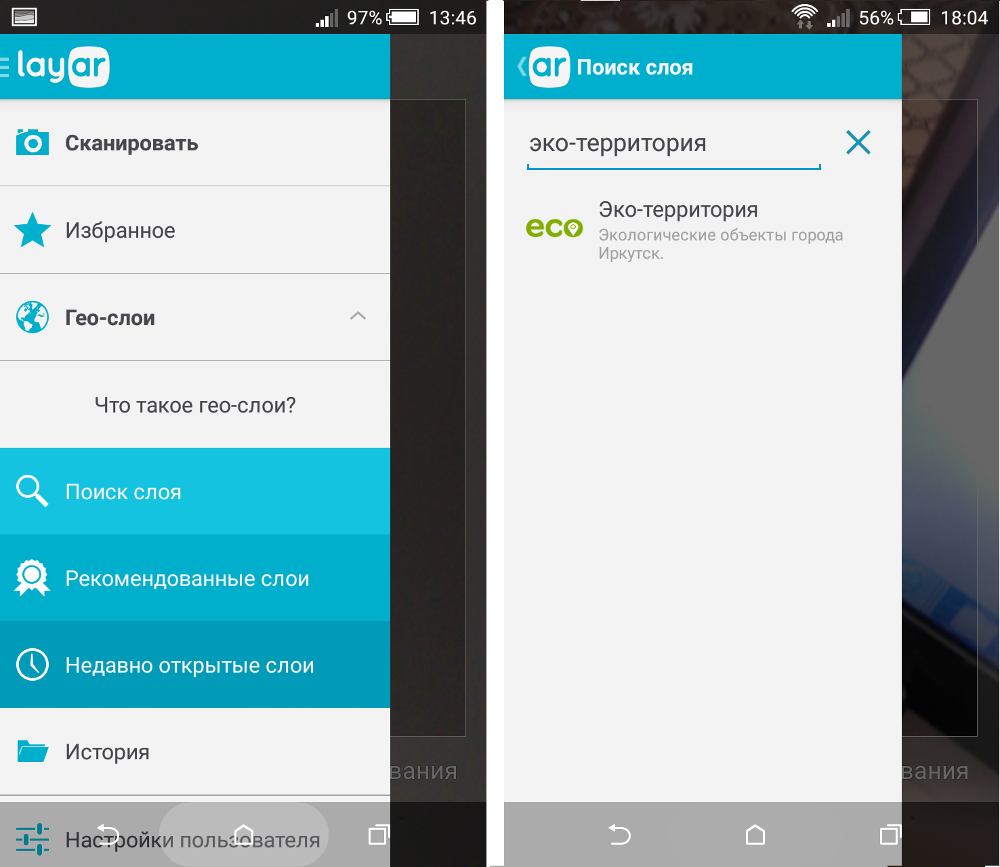
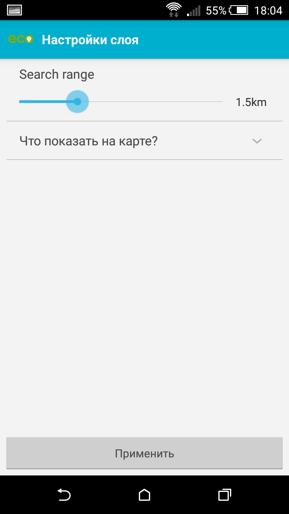
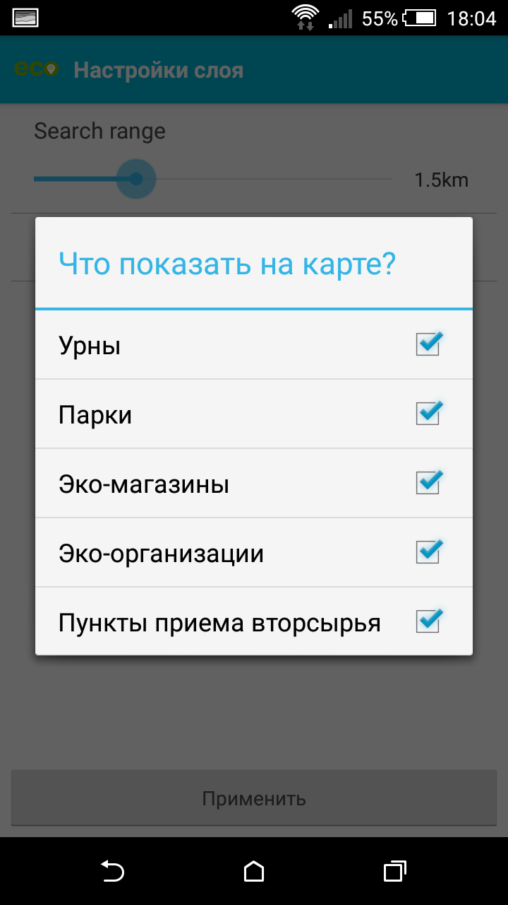
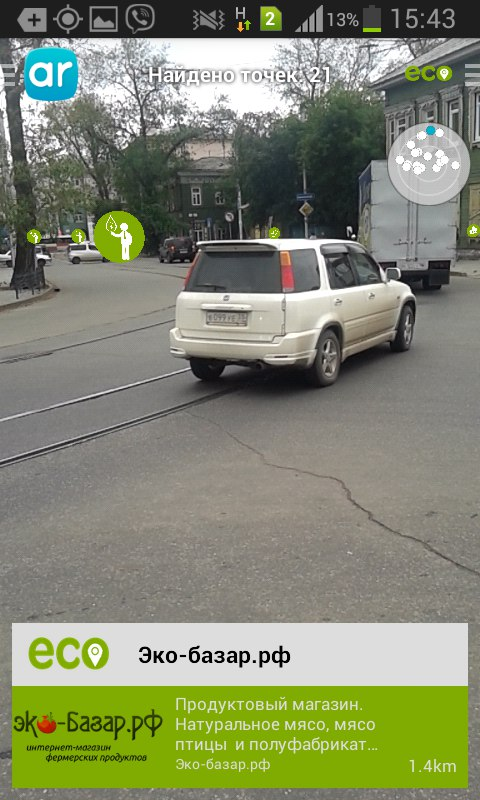
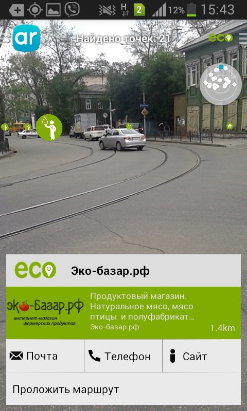
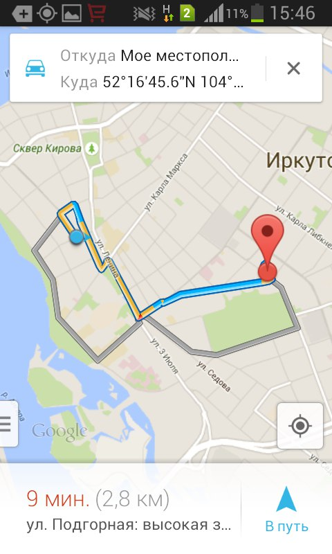

Приложение "Эко-территория" представляет собой приложение для геолокационного браузера дополненной реальности LayAr
Позволяет увеличить возможности пользователя по взаимодействию с объектами городской инфраструктуры г. Иркутска:
находить и прокладывать маршруты к тем из них, которые можно назвать эко-логичными:
-
Какие объекты можно найти???
* парки, скверы, сады, усадьбы – места отдыха горожан и гостей города;
* эко-магазины – магазины, предлагающие экологическое питание, одежду, предметы быта;
* пункты приема вторсырья и отходов;
* организации, контролирующие, помогающие, решающие, поднимающие - проблемы экологии города.
Сейчас в базе более 70ти объектов их - телефоны, сайты и многое другое
-
Для освоения «Эко-территории» необходимо выполнить пять простых шагов:
-
Шаг 1. Активация приложения
Приложение «Эко-территория» можно активировать, запустив браузер на мобильном устройстве, раскрыв меню «Гео-слои» выбираем «поиск слоя» и водим соответствующие название «Эко-территории» или использовать более простую схему, основанную на считывании QR-кода

-
Шаг 2. Настройка фильтров
После запуска приложения надо настроить фильтры: выбрать радиус охвата и необходимую категорию эко-объектов города
  -
Шаг 3. Поиск объектов
Результатом корректной настройки фильтров является отображение на экране смартфона пиктограмм объектов, соответствующей категории, располагающихся в указанной нами области охвата и отвечающие углу и направлению сканирования смарфоном городской инфраструктуры

-
Шаг 4. Выбор точки, получение информации об объекте
Объекты каждой категории отображается на экране мобильного устройства в виде иконок, а внизу экрана выводится информация (текстовая, аудио, видео), характеризующая тот или иной объект
  -
Шаг 5. Прокладывание маршрута
Дойти до нужного объекта поможет опция «Маршрут», которая не только построит нужный маршрут, но и будет сопровождать вас до объекта голосовыми оповещениями
